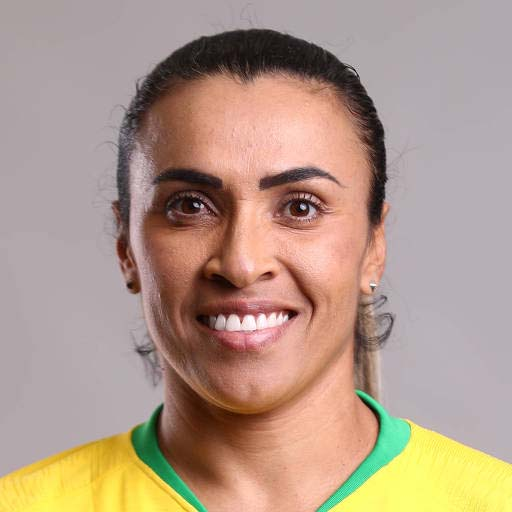

Melhor jogadora do Mundo

Marta Viera da Silva (19/02/1986) melhor jogadora do mundo por 6 vezes.
Marta sem sombra de dúvidas é a melhor jogadora de futebol do mundo e com todo orgulho ela é brasileira. Marta serve de inspiração não somente dentro dos esportes mas também fora dos gramados. Muitas meninas se inspiram em sua história de vida e dentro do esporte. Escolhida a melhor jogador do mundo por 6 vezes (recorde entre as mulheres e os homens) foi escolhida como “um dos brasileiros” mais influentes de 2009 pela revista Época e desde 2015 é a maior artilheira da seleção brasileira de futebol (tanto masculina como feminina) contando com 110 gols.